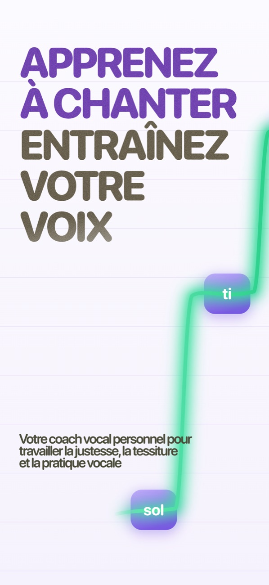
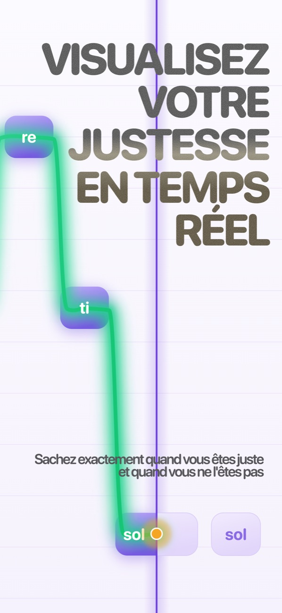
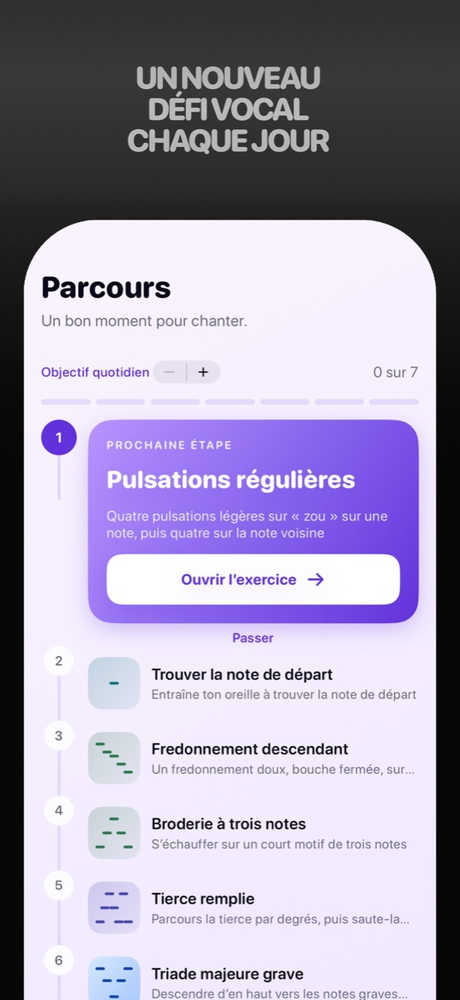
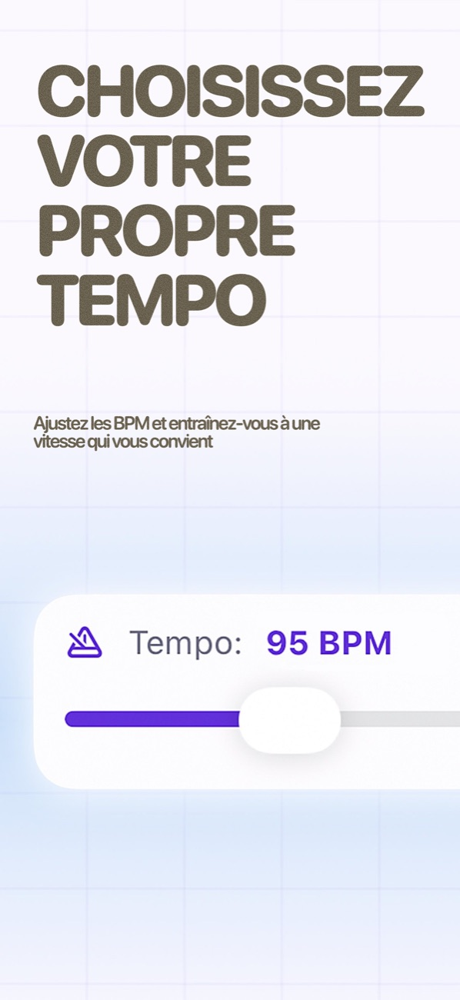

Pratique ciblée
Canu isole le passage où tu bloques, te donne quelques notes d’élan, puis te fait reprendre l’exercice entier.
Canu est ton coach vocal personnel. Apprends à chanter juste, développe ta voix et chante avec plus d’assurance. Pas à pas.
Canu isole le passage où tu bloques, te donne quelques notes d’élan, puis te fait reprendre l’exercice entier.
Vois quelle note tu chantes et avec quelle justesse tu la tiens.
Mesure ta tessiture en direct et découvre ton type de voix.
Commence par deux échauffements et installe une routine avec des exercices variés.
Après chaque exercice, vois ce qui s’est amélioré et quel passage travailler ensuite.
Compose des gammes et des suites de notes, choisis les notes et le tempo, puis enregistre-les. Canu Boogie est fourni comme exemple à modifier.
Ta semaine de pratique sur une portée, avec les minutes de chaque jour.
Justesse, formation de l’oreille, agilité, articulation, gestion du souffle et plus encore.
Change les BPM pour ralentir un exercice difficile ou accélérer peu à peu.
Choisis l’apparence qui te convient ou laisse-la changer automatiquement.




Ta voix se développe par la pratique.
Décris brièvement ta demande. Nous répondons au plus vite et n’utilisons tes informations que pour traiter ta demande.
Pour pouvoir t’aider : indique l’appareil, la version d’iOS, la version de l’app et une brève description du problème. Une capture d’écran aide souvent.
Canu a besoin d’accéder au micro. Autorise-le dans les Réglages de l’iPhone, sous Canu. Chante dans une pièce calme et ne couvre pas le micro.
Canu n’enregistre que si tu actives l’enregistrement. Les prises restent sur ton appareil et tu peux les supprimer dans l’app. Écouter, comparer, enregistrer et partager font partie de Canu Pro.
Les achats passent par ton identifiant Apple. Sur l’écran Pro de Canu, touche « Restaurer l’abonnement ». L’abonnement se gère et se résilie dans les réglages de ton identifiant Apple.
Uniquement avec ton accord : les données d’utilisation vont à Google Analytics, les rapports d’erreur à Firebase Crashlytics. Chacun se désactive séparément dans les réglages de Canu, avec « Partager les données » et « Partager les erreurs ». L’audio n’est pas transmis.
Choisis la région où tu utilises Canu.